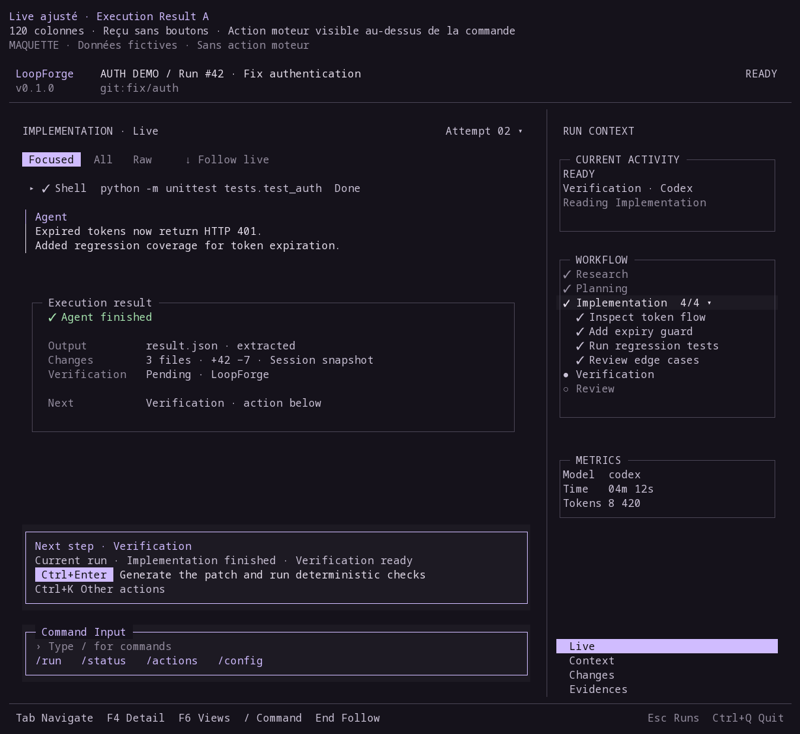
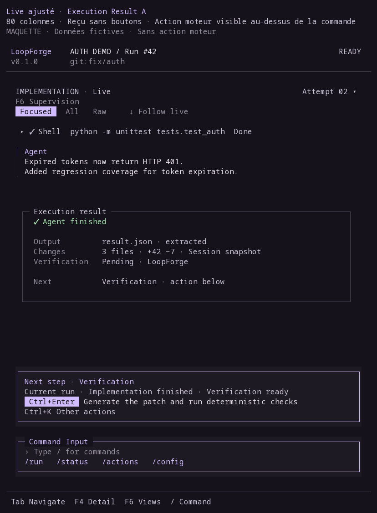
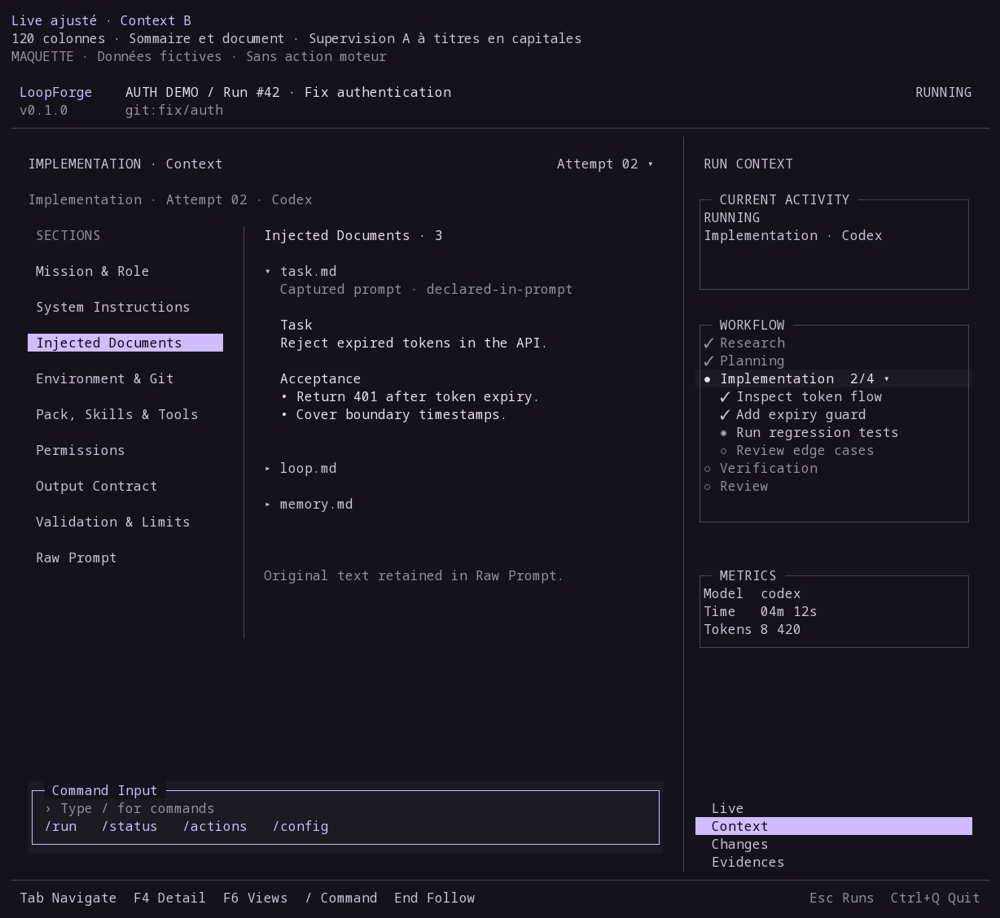
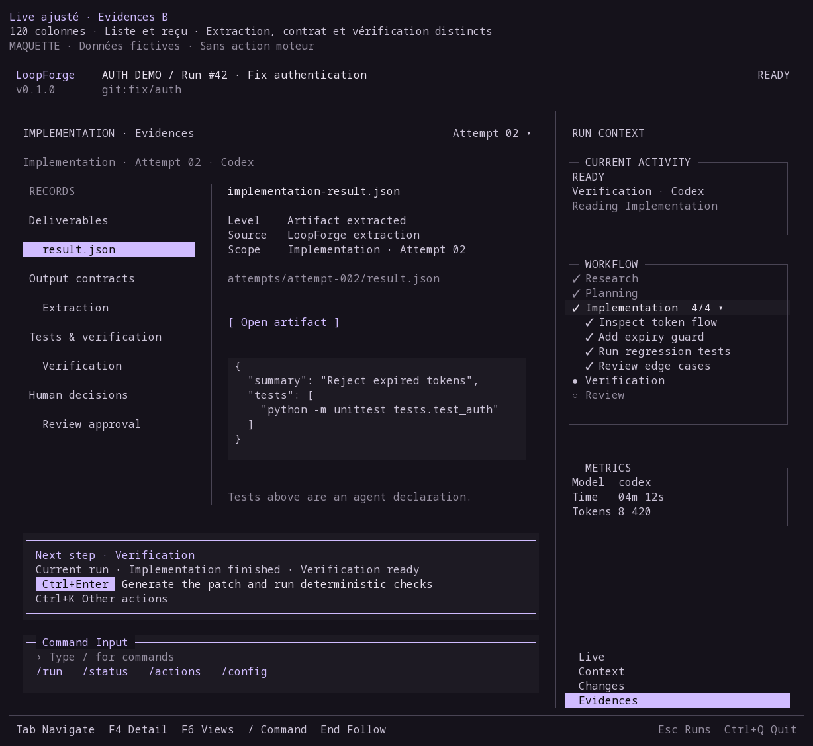
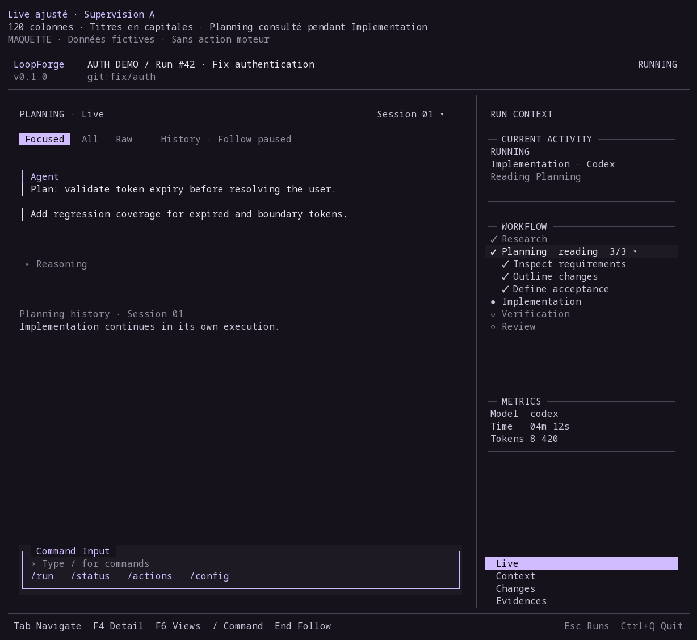
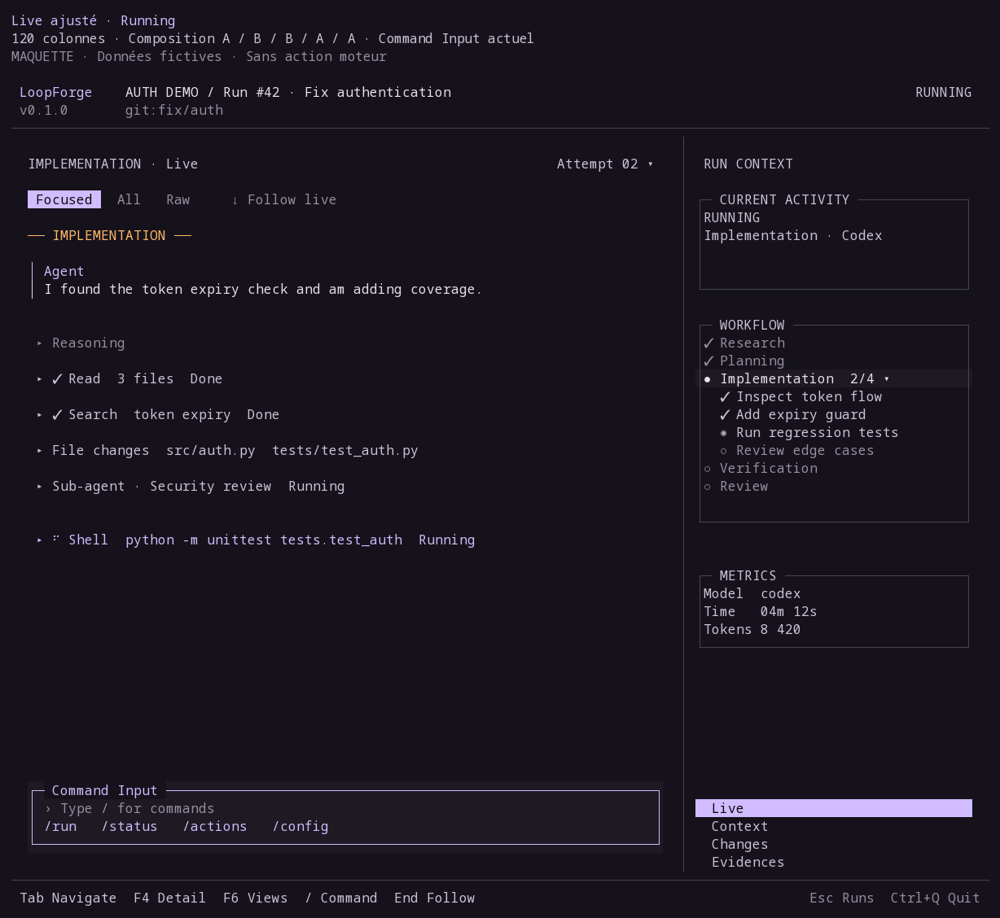
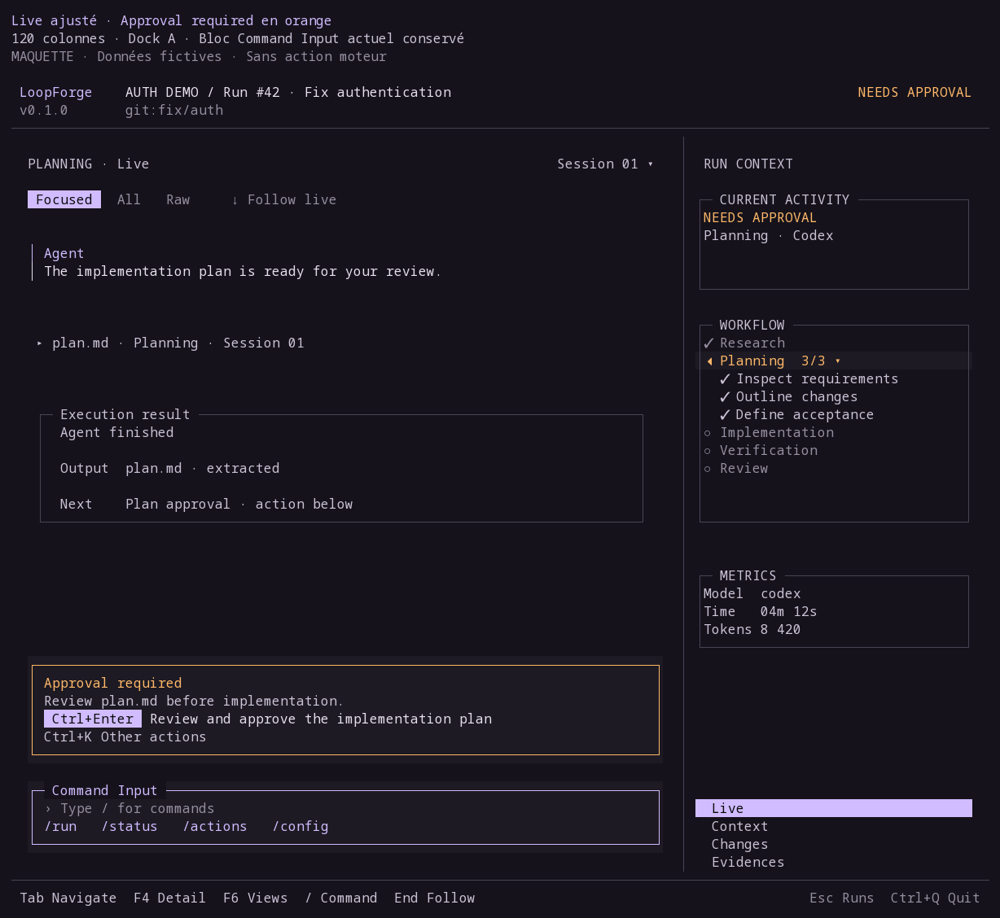
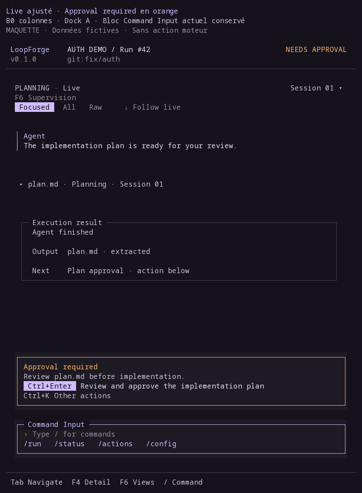

Composition ajustée après ton retour
Choix enregistrés : 9A / 10B / 11B / 12A / 13A. Les maquettes ci-dessous assemblent ces préférences avec les titres en capitales, Approval required en orange et le Command Input actuel.
La suite est proposée dans un seul bandeau persistant au-dessus de la commande : Ctrl+Enter appelle l’action autorisée par le moteur. Une approbation conserve son intitulé explicite et ses confirmations. Cette interaction est une proposition de conception, sans autorisation d’implémentation.
| Composant | Choix | Ajustement |
|---|---|---|
| 09 | A | Reçu sans boutons de navigation ; priorité au déclenchement de la prochaine étape. |
| 10 | B | Choix enregistré |
| 11 | B | Choix enregistré |
| 12 | A | Titres des panneaux en capitales. |
| 13 | A | Approval required en orange ; Command Input actuel conservé. |
| 14 | Composition | Choix enregistré |
Execution Result et déclenchement de la suite

Live ajusté · Execution Result A
Le reçu A reste informatif. Le déclenchement moteur est proposé dans une zone persistante, sans doublon dans le reçu.

Live ajusté · Execution Result A
Le reçu A reste informatif. Le déclenchement moteur est proposé dans une zone persistante, sans doublon dans le reçu.
Context et Evidences

Live ajusté · Context B
Sommaire local et document ; la sidebar A et le Command Input actuel entourent la vue retenue.

Live ajusté · Evidences B
Liste et reçu conservés, avec action actuelle du run dans le dock commun ; aucune action de validation dans le document.
Supervision et cockpit en cours

Live ajusté · Supervision A
CURRENT ACTIVITY, WORKFLOW et METRICS en capitales ; sélection et étape active distinctes, TODO imbriqués.

Live ajusté · Running
Assemblage des préférences : aucun reçu final ni action Next step anticipés pendant l’exécution.
Approval required et Command Input

Live ajusté · Approval required en orange
Titre Approval required orange, action moteur unique et Command Input à cadre lavande et deux lignes conservé.

Live ajusté · Approval required en orange
Titre Approval required orange, action moteur unique et Command Input à cadre lavande et deux lignes conservé.
Données fictives · Maquettes statiques · Aucun code produit modifié.
Composants 1 à 7 conservés ; Error / Warning / Unknown en l’état.